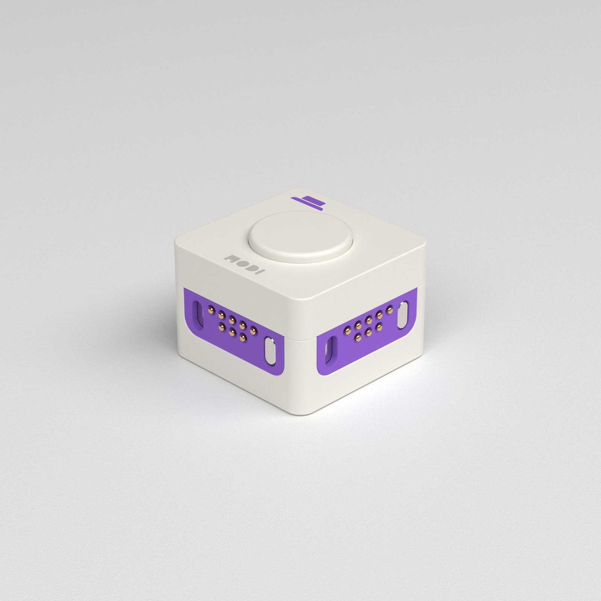
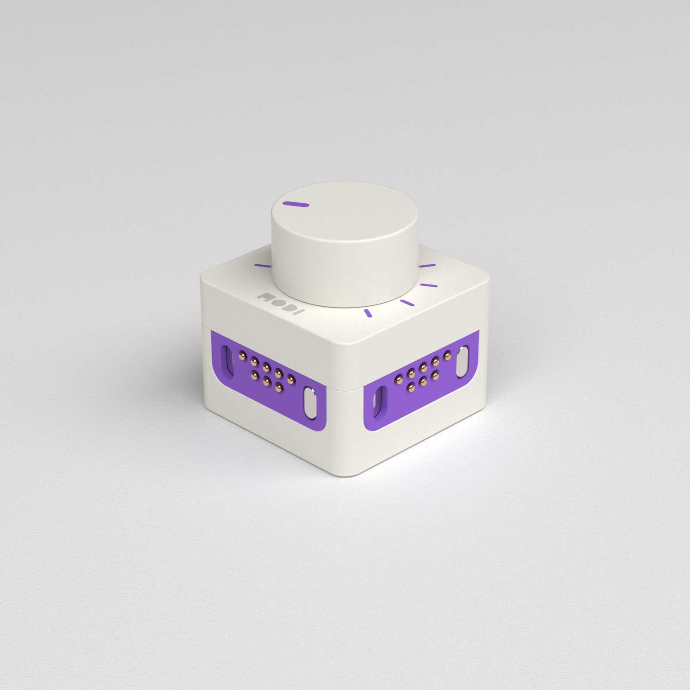
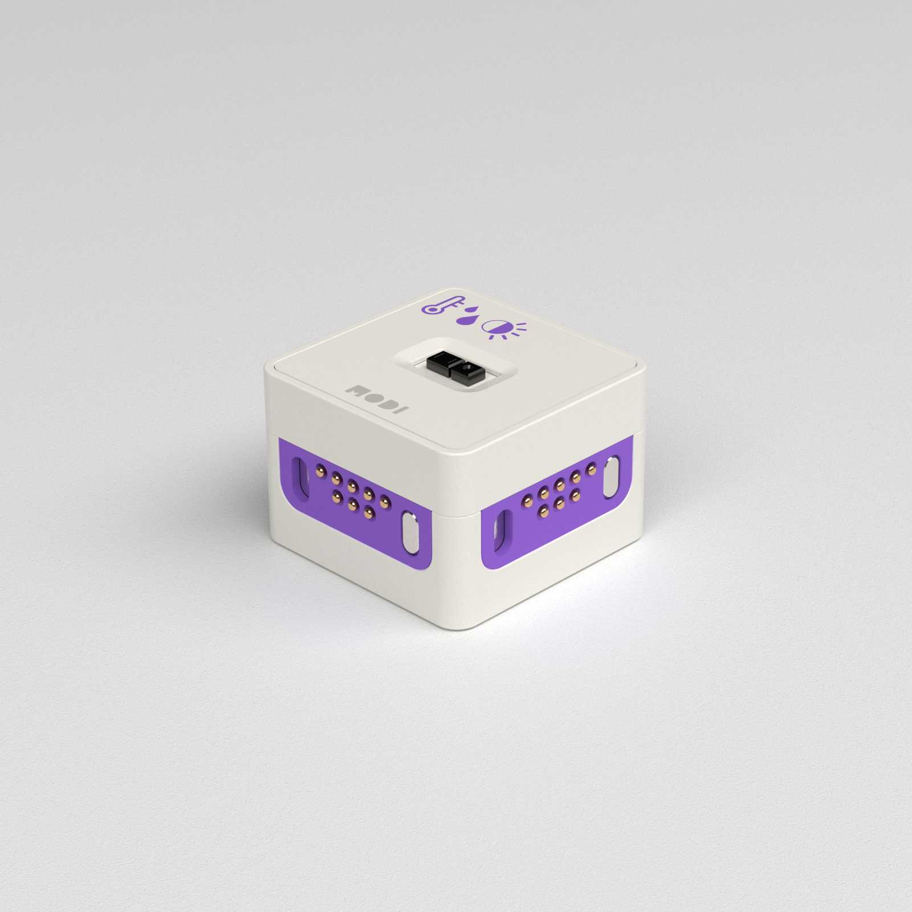
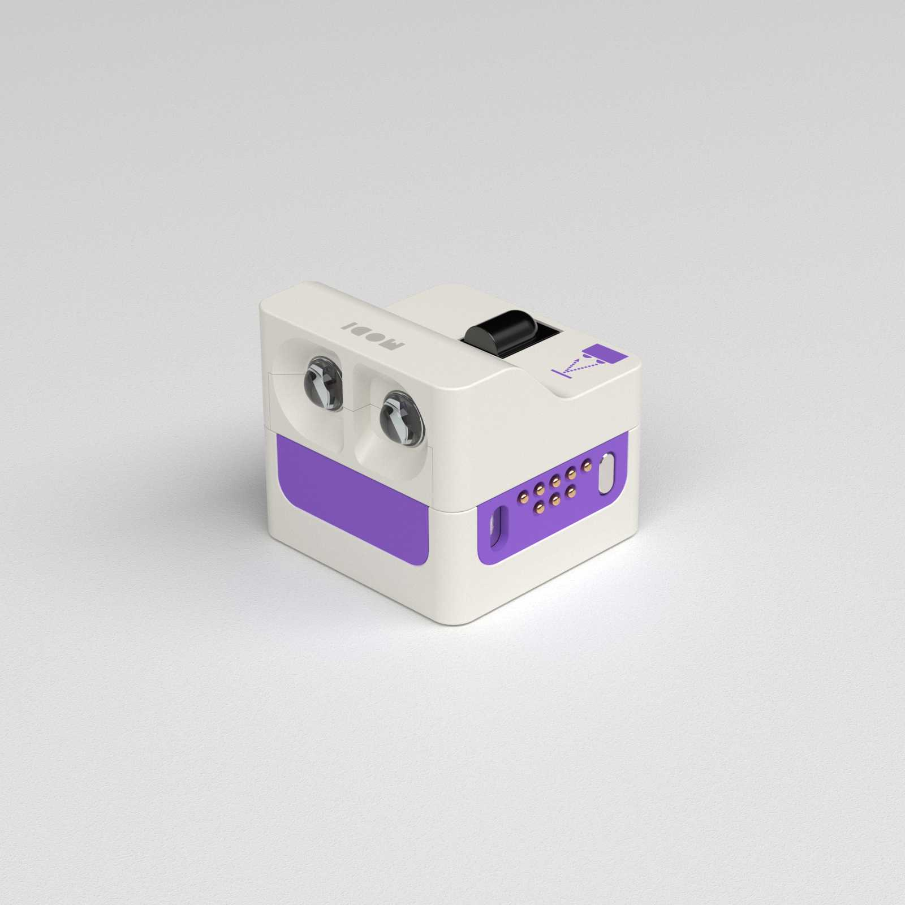
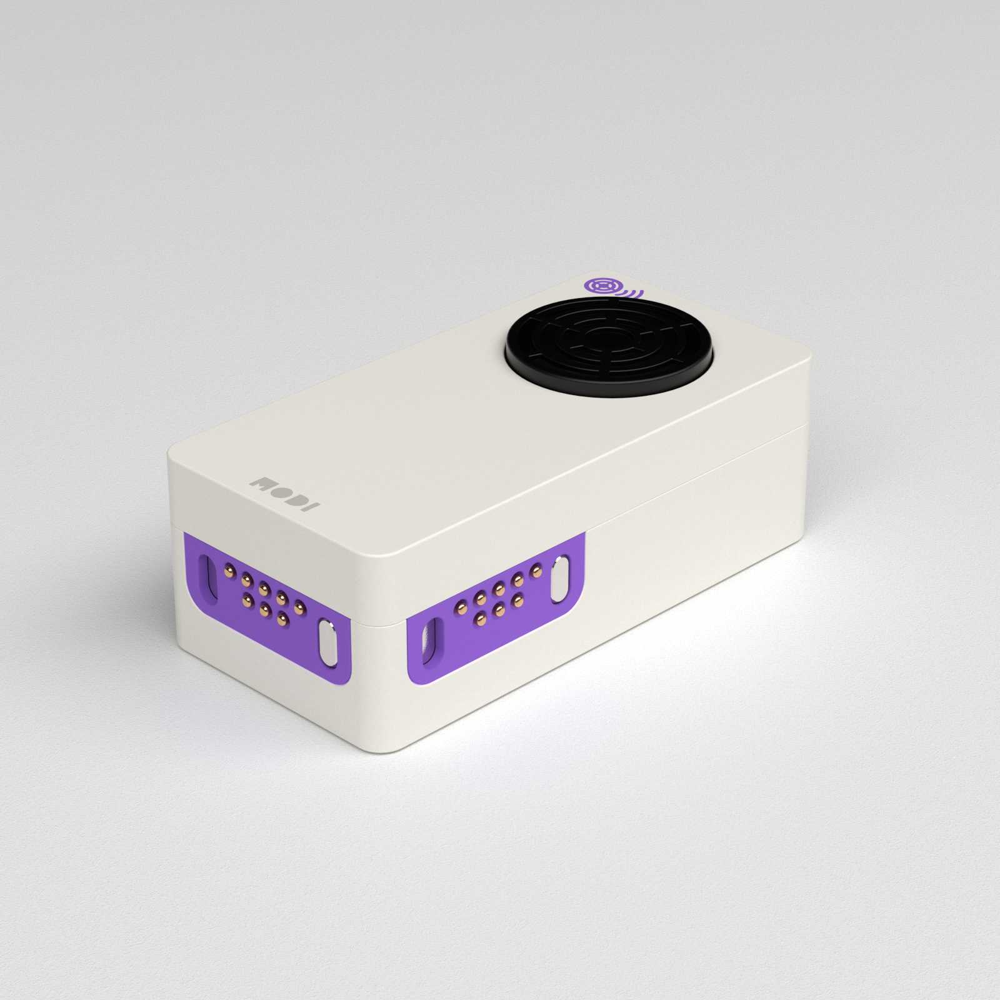
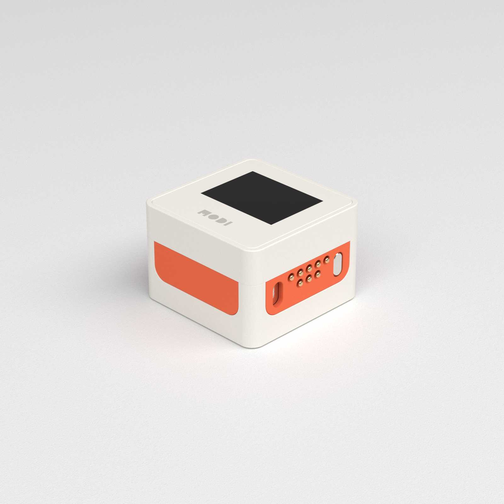
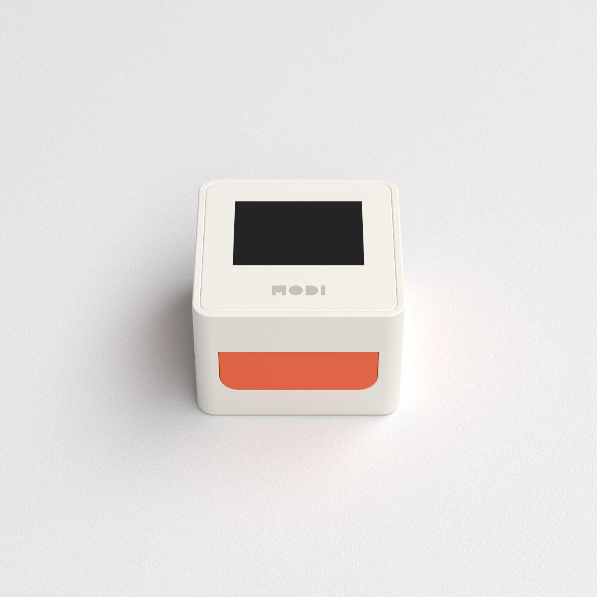
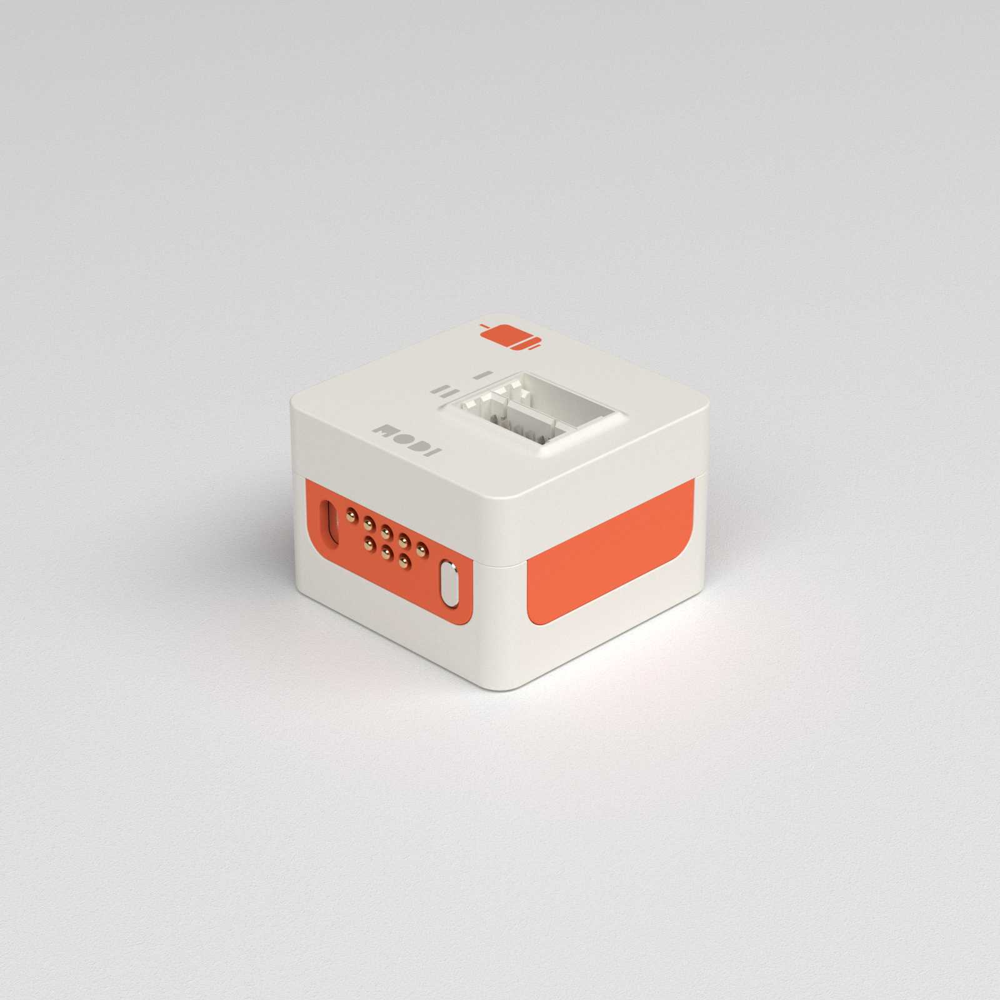
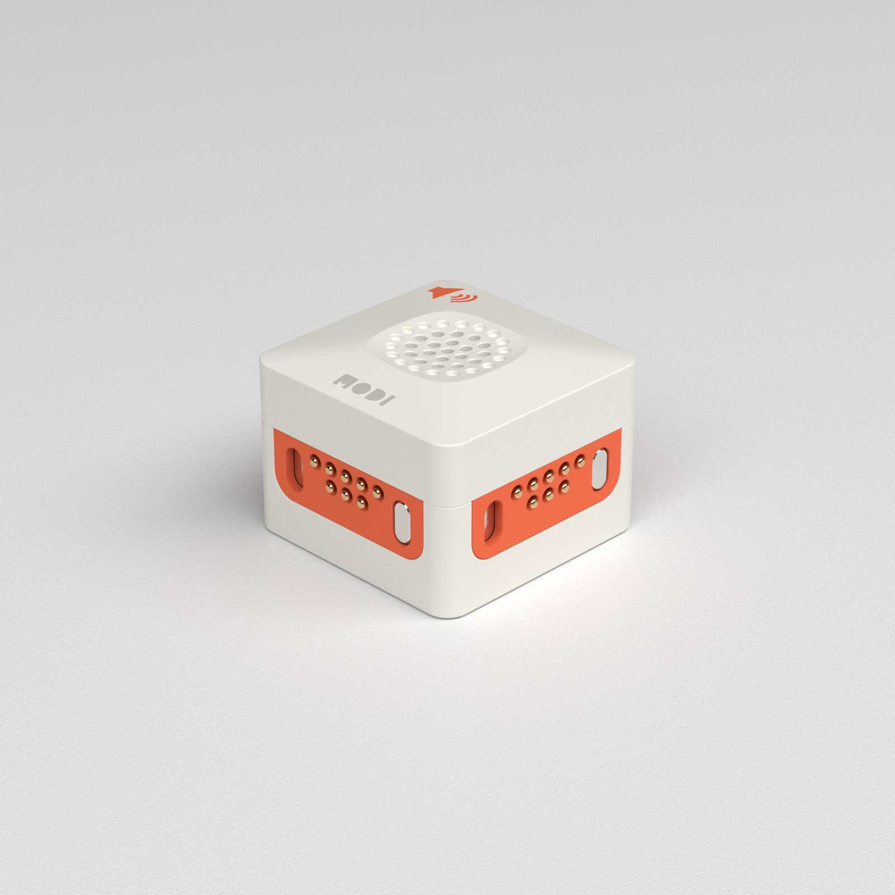

PyMODI
Menu
Introduction
Creations
About
Contact Us
How To Use PyMODI
[한글로 보기]
Input Modules

Button Module
clicked
: Returns whether the button is pressed and released
Return value
: True / False
Usage
: button.clicked
double_clicked
: Returns whether the button is double clicked
Return value
: True / False
Usage
: button.double_clicked
pressed
: Returns whether the button is pressed
Return value
: True / False
Usage
: button.pressed
toggled
: Returns whether the button is toggled. It changes the value when the button is pressed.
Return value
: True / False
Usage
: button.toggled

Dial Module
degree
: Returns the angle of the dial
Return value
: 0 ~ 100
Usage
: dial.degree
turnspeed
: Returns the turnspeed of the dial
Return value
: 0 ~ 100
Usage
: dial.turnspeed

Environment Module
brightness
: Returns the brightness value
Return value
: 0 ~ 100
Usage
: env.brightness
humidity
: Returns the current humidity
Return value
: 0 ~ 100
Usage
: env.humidity
temperature
: Returns the current temperature
Return value
: 0 ~ 100
Usage
: env.temperature
red
: Returns the red value of the light
Return value
: 0 ~ 255
Usage
: env.red
green
: Returns the green value of the light
Return value
: 0 ~ 255
Usage
: env.green
red
: Returns the blue value of the light
Return value
: 0 ~ 255
Usage
: env.blue
Gyro Module
pitch
: Returns the pitch value
Return value
: -180 ~ 180
Usage
: gyro.pitch
roll
: Returns the roll value
Return value
: -180 ~ 100
Usage
: gyro.roll
yaw
: Returns the yaw value
Return value
: -180 ~ 100
Usage
: gyro.yaw
angular_vel_x
: Returns the angular velocity with respect to x axis
Return value
: -100 ~ 100
Usage
: gyro.angular_vel_x
angular_vel_y
: Returns the angular velocity with respect to y axis
Return value
: -100 ~ 100
Usage
: gyro.angular_vel_y
angular_vel_z
: Returns the angular velocity with respect to z axis
Return value
: -100 ~ 100
Usage
: gyro.angular_vel_z
acceleration_x
: Returns the acceleration to x axis
Return value
: -100 ~ 100
Usage
: gyro.acceleration_x
acceleration_y
: Returns the acceleration to y axis
Return value
: -100 ~ 100
Usage
: gyro.acceleration_y
acceleration_z
: Returns the acceleration to z axis
Return value
: -100 ~ 100
Usage
: gyro.acceleration_z
vibration
: Returns the magnitude of vibration
Return value
: 0 ~ 100
Usage
: gyro.vibration

Infrared Module
proximity
: Returns the proximity value
Return value
: 0 ~ 100
Usage
: ir.proximity
Mic Module
frequency
: Returns the frequency of the input sound
Return value
: float value
Usage
: mic.frequency
volume
: Returns the volume of the input sound
Return value
: 0 ~ 100
Usage
: mic.volume

Ultrasonic Module
distance
: Returns the distance to the object
Return value
: 0 ~ 100
Usage
: ultrasonic.distance
Output Modules

Display Module
text
: Sets the text of the display module
Return value
: current text of the module
Usage
: display.text = "Hello World"
clear()
: Clears the screen of display module
Return value
: None
Usage
: display.clear()
show_variable()
: Show a number on the display
Return value
: None
Parameters
:
variable: number to show on the screen
position_x: vertical position of the number
position_y: horizontal position of the number
Usage
: display.show_variable(2.3, 5, 3) # Show 2.3 on position (5, 3) of the screen

Led Module
red
: Sets the red componenet of the light
Return value
: red component of the current light
Usage
: led.red = 255
green
: Sets the green componenet of the light
Return value
: green component of the current light
Usage
: led.green = 255
blue
: Sets the blue componenet of the light
Return value
: blue component of the current light
Usage
: led.blue = 255
rgb
: Sets the rgb components of the light
Return value
: Current rgb values
Usage
: led.rgb = 255, 10, 30
turn_on()
: Turns on the led to maximum brightness
Return value
: 255, 255, 255
Usage
: led.turn_on()
turn_off()
: Turns off the led
Return value
: 0, 0, 0
Usage
: led.turn_off()

Motor Module
degree
: Sets the degree of motors on both channel
Return value
: Current degree of the motors
Usage
: motor.degree = 30, 90
first_degree
: Sets the degree of motors on channel I
Return value
: Current degree of the motor on channel I
Usage
: motor.first_degree = 50
second_degree
: Sets the degree of motors on channel II
Return value
: Current degree of the motor on channel II
Usage
: motor.second_degree = 50
speed
: Sets the speed of motors on both channel
Return value
: Current speed of the motors
Usage
: motor.speed = 50, 100
first_speed
: Sets the speed of motors on channel I
Return value
: Current speed of the motor on channel I
Usage
: motor.first_speed = 50
second_speed
: Sets the speed of motors on channel II
Return value
: Current speed of the motor on channel II
Usage
: motor.second_speed = 50

Speaker Module
tune
: Sets the frequency and volume of the sound
Return value
: Current frequency, current volume
Usage
: speaker.tune = 220, 100 # Plays the sound with frequency 220Hz and volume 100
frequency
: Sets the frequency of the sound
Return value
: Current frequency
Usage
: speaker.frequency = 550
volume
: Sets the volume of the sound
Return value
: Current volume
Usage
: speaker.volume = 50
turn_off()
: Turns off the sound
Return value
: 0
Usage
: speaker.turn_off()
Copyright © PyMODI Official 2020